El grupo Navidul obtuvo en 1999 un beneficio neto de 2.054 millones de pesetas ( 12 millones de euros ) , lo que supone un crecimiento del 30,4 por ciento respecto al ejercicio anterior , mientras que la cifra de negocios aumentó un ocho por ciento , hasta los 44.350 millones de pesetas ( 266,54 millones de euros ).
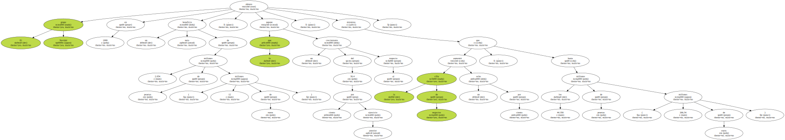Navidul , que en 1995 adquirió Industrias Revilla y lidera el mercado del jamón curado , exportó durante 1999 por valor de 3.050 millones de pesetas ( 18,3 millones de euros ) , un 10,8 por ciento más que un año antes.
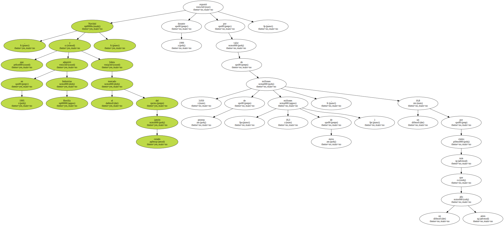La coordinadora de Participación y Acción Sectorial del PP , Ana Mato , pidió hoy al Gobierno y a los agentes sociales que " sigan profundizando en las medidas aprobadas en la pasada legislatura y que ahonden en las reformas que están creando empleo ".
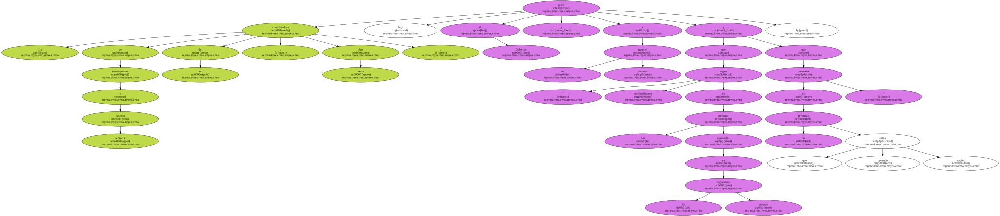Destacó que el millón y medio de desempleados actuales es " la menor cifra de paro registrado en cualquier mes desde julio de 1981 " y atribuyó ese descenso a la reforma laboral de 1997 y a la política económica del Ejecutivo , " que ha transformado el crecimiento económico en creación de empleo ".
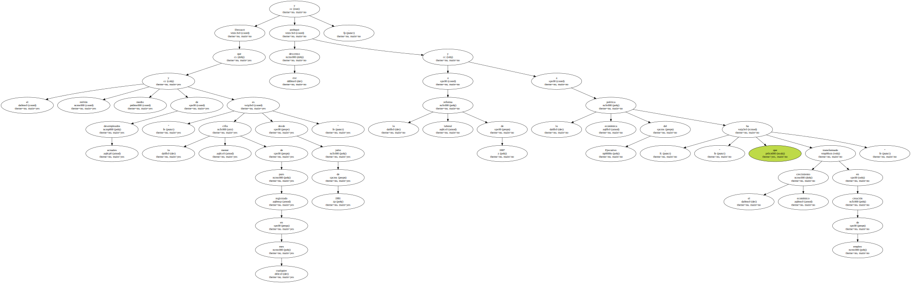Pese a todo , Mato admitió que es necesario reducir la temporalidad y luchar contra la siniestralidad laboral , para lo que considera imprescindible que los sindicatos y empresarios lleguen pronto a acuerdos concretos.
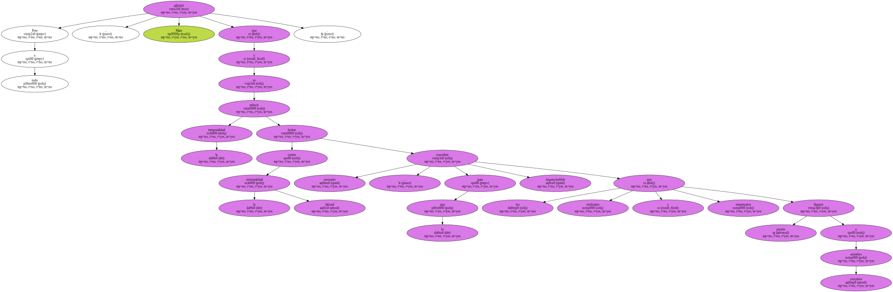El secretario general de CCOO , José María Fidalgo , opinó hoy en Calviá ( Mallorca ) que el gasto farmacéutico " está parasitando " al gasto sanitario y evitando que se liberen recursos para acabar con las listas de espera en los centros hospitalarios.
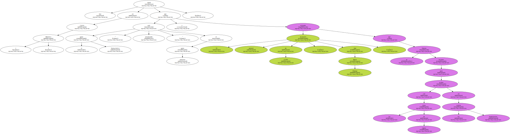Fidalgo , quien hoy asistió a la inauguración del séptimo congreso regional de CCOO , explicó que , de los más de cuatro billones de pesetas que el Erario público gastará este año en asistencia sanitaria , un tercio es para el gasto farmacéutico , un apartado que calificó de " altamente ineficiente ".
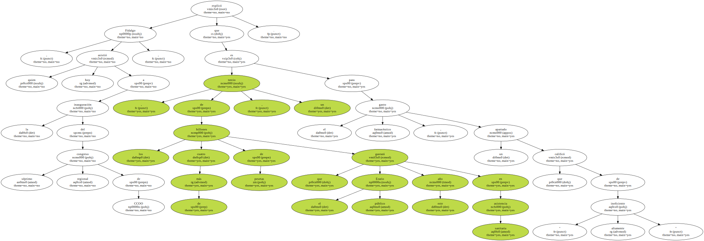" Se trata de beneficiar a laboratorios farmacéuticos , que endosan al sistema sanitario no sólo los fármacos convenientes , sino bastante morralla " , apostilló.
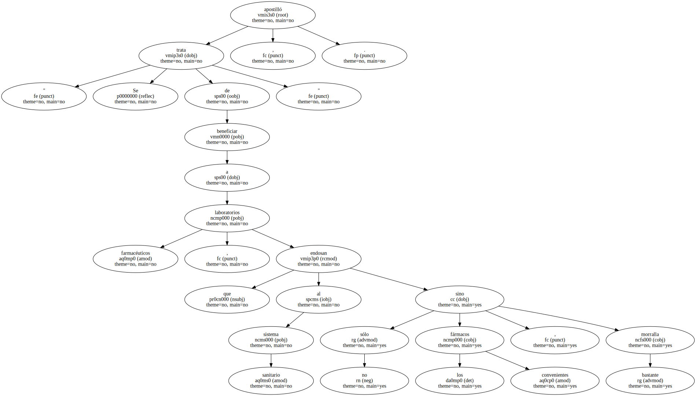En opinión de Fidalgo , " ni este Gobierno ni los anteriores han tenido el valor suficiente para atajar ese incremento del gasto farmacéutico , que está parasitando el gasto sanitario y evitando que se liberen recursos para aumentar el número de camas , las dotaciones de plantillas y ampliar los servicios de atención a los pacientes ".
Por eso , opinó que las listas de espera no son una " enfermedad " del sistema sanitario , sino " el síntoma de una enfermedad , que es un gasto sanitario insuficiente , mal gestionado , con objetivos no siempre priorizados con la salud de la ciudadanía ".

A su juicio , el sistema sanitario público es " razonablemente bueno , pero con algunos riesgos " , ya que el Sistema Nacional de Salud " no se ha convertido en una de las prioridades de desarrollo del Estado del Bienestar ".
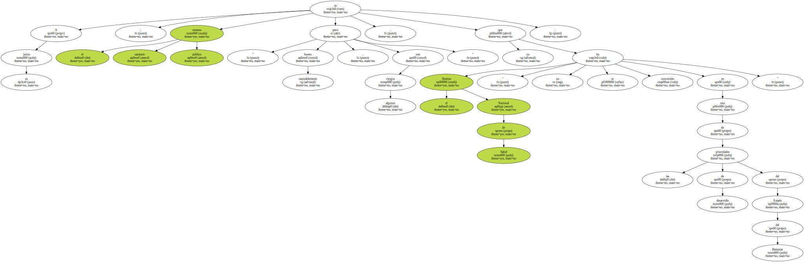" Ni gasta el dinero suficiente , ni el dinero que administra lo gasta de la manera más conveniente " , insistió Fidalgo , quien también recordó que la tasa de gasto sanitario en España está todavía por debajo de la media europea.
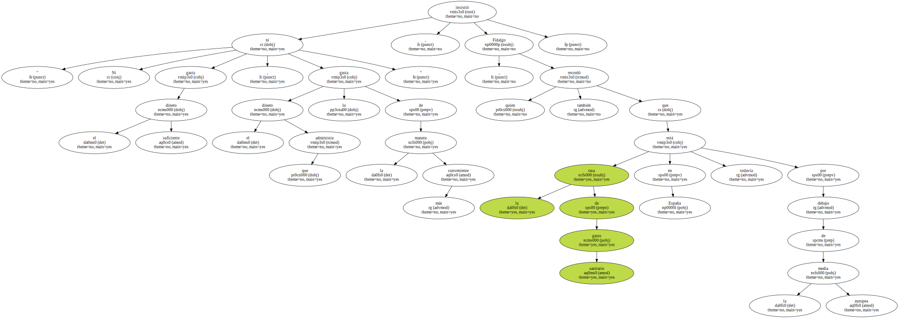La Organización Internacional del Trabajo ( OIT ) ha pedido a Myanmar que realice las modificaciones necesarias para acabar de forma eficaz con el trabajo forzoso.
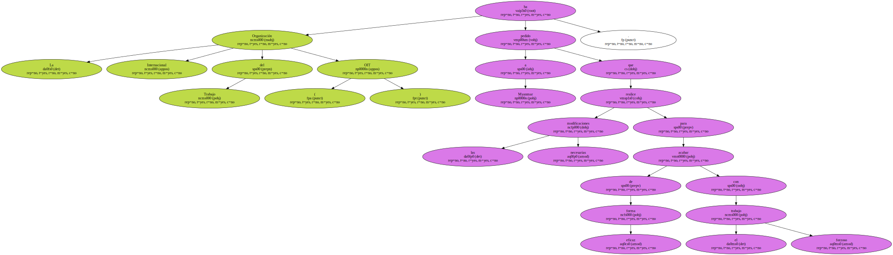Una misión de cooperación técnica de la OIT visitó en mayo pasado el país y someterá un informe , dado a conocer hoy , a la Conferencia Internacional del Trabajo , que se celebra en Ginebra.
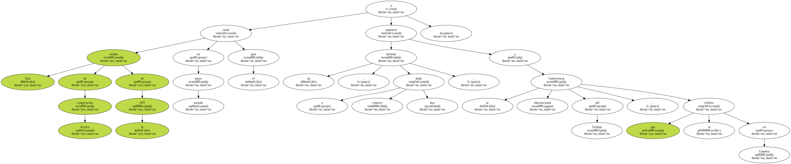Durante la visita , los expertos se entrevistaron con responsables políticos que aseguraron que , tras la publicación de un decreto el pasado año , la imposición de trabajos forzosos u obligatorios ha sido suspendida en la práctica y ninguna queja ha llegado al conocimiento de los órganos de aplicación de la ley.
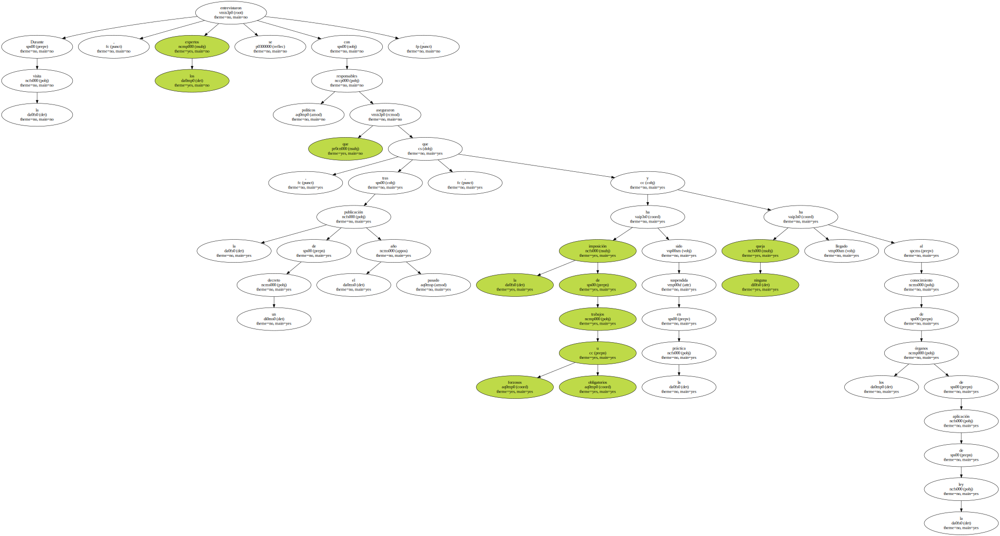La misión también habló con la secretaria de la Liga Nacional para la Democracia , Aung San Suu Kyi , quien insistió en " la gravedad persistente del trabajo forzoso , en particular debido a su uso por militares y sobre las formas extremas que podía adoptar con el reclutamiento de niños ".
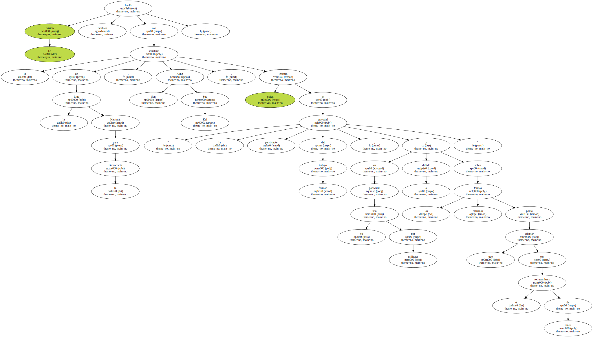Myanmar está entre las preocupaciones de la OIT , especialmente desde 1998 , cuando una comisión de investigación juzgó que el uso del trabajo forzado estaba muy expandido.
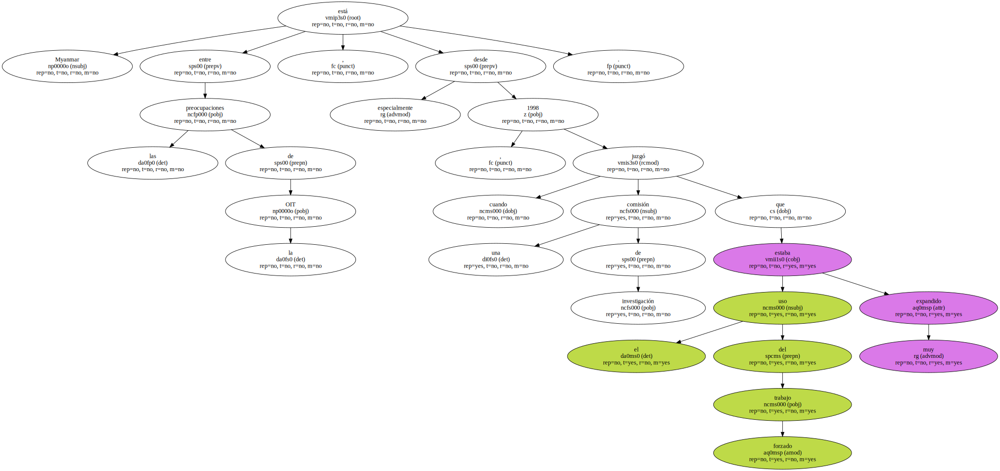